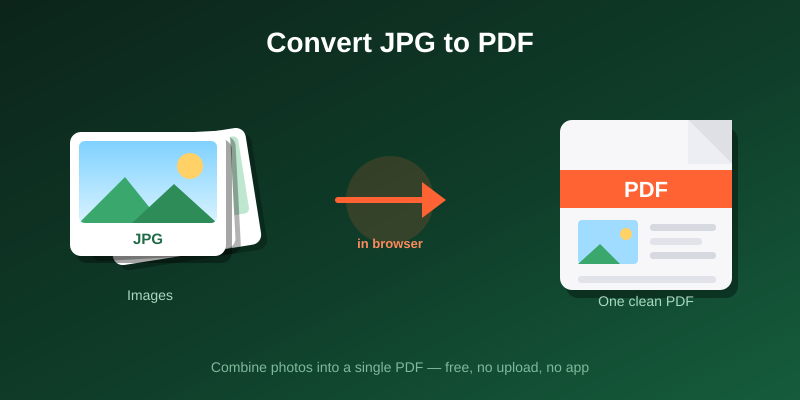

How to Convert JPG to PDF Without Losing Quality
To convert JPG to PDF without losing quality, use a converter that places the original JPG inside the PDF instead of saving it again. Keep the image unrotated in the tool, choose the highest quality setting and skip any resize step. The PDF then holds the same pixels as your photo.
The free Image to PDF converter on PDFdukan does this in its Best mode.
Why does a JPG lose quality when it becomes a PDF?
A JPG loses quality in a PDF when the converter decodes the photo and saves it as a new JPEG. JPEG is lossy, so each new save drops detail. It shows as blur around text and blocky patches in plain areas.
Lower settings can also cut resolution. ihatepdf, for example, says its High, Medium and Small settings re-encode images at 200, 150 and 100 DPI.
How to convert JPG to PDF without losing quality
The PDFdukan converter needs five steps, and none of them saves the photo again.
- Open the Image to PDF tool and add your JPG files.
- Drag the thumbnails into page order.
- Leave each image at its original rotation.
- Set Quality to "Best — preserve unrotated source".
- Pick page size, orientation and margin, then download the PDF.
Page size and margin only change where the photo sits. The picture is scaled to fit, but every original pixel stays in the file, so zooming in shows full detail.
Which quality setting keeps the original JPG?
Only the Best setting keeps the original JPG. The other settings save a new JPEG at lower quality, so use them only for a size limit.
| Setting | What happens | Good for |
|---|---|---|
| Best | Original JPG kept unchanged | Printing and records |
| High | Saved again at 85% quality | Smaller files |
| Medium | Saved again at 72% quality | Email attachments |
| Low | Saved again at 55% quality | Strict upload limits |
The tool's rotate button also saves the photo again, even in Best mode. Rotate the photo in your phone's gallery instead, and Best mode keeps it untouched.
Why do phone photos turn sideways in a PDF?
Phone photos turn sideways because the camera stores the image one way and adds an orientation tag for display. A converter that ignores the tag shows the photo on its side, and some even stretch it.
The PDFdukan converter reads that tag in Best mode. For plain rotations it turns the untouched JPG on the page, so the photo stands upright with no new save.
Will the PDF print sharp?
A PDF prints only as sharp as the photo inside it, because no converter adds detail the camera never captured. Use the original file from your camera roll, not a screenshot. Canva, for example, says its PDF Print format has a higher resolution than PDF Standard.
How do you keep the PDF small without hurting quality?
Convert once at full quality, then compress the finished PDF to the size the form asks for. The image is then reduced a single time, at the end. The Compress PDF tool does this in your browser, and our image compression guide explains lossy and lossless settings.
Frequently Asked Questions
Can you convert JPG to PDF without losing quality?
Yes, when the converter embeds the original JPG instead of saving it again. In the PDFdukan Image to PDF tool, Best mode does this for images left unrotated in the tool.
Will the colors change?
Colors stay the same when the original JPG is embedded, because the PDF holds the same image data. A lower quality setting saves new data, so fine color detail can shift.
Does a high-quality PDF mean a huge file?
A Best-mode PDF is close to the size of the JPGs inside it. In our test, a 314,603-byte JPG became a 318,023-byte PDF.
Can I combine several JPGs into one PDF?
Yes, add several images together and each becomes its own page in the order you set. To join finished PDFs, see our guide to merging PDFs without losing quality.
Can I convert iPhone HEIC photos?
The PDFdukan converter accepts JPEG, PNG and WebP, not HEIC. On an iPhone, Settings › Camera › Formats › Most Compatible saves new photos as JPEG.
Are my images uploaded to a server?
No, the PDFdukan Image to PDF tool builds the PDF in your browser, so photos are not sent away for conversion. The page still loads normal site files and its PDF library.
